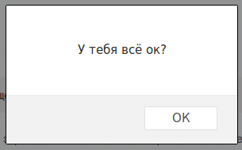
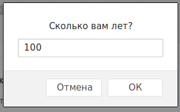
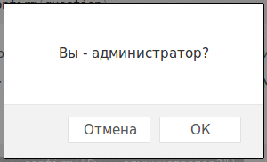

В JS существует три стандартных инструмента для взаимодействия с пользователем через всплывающие модальные окна:
Расположение и стиль окна выбирается браузером, разрабочик не может на это повлиять. Обычно это центр экрана.
alert
Синтаксис:
alert(сообщение)
Пример:
alert("У тебя всё ок?");

prompt
Синтаксис:
result = prompt(title, default);
Функция выводит модальное окно с заголовком title, полем ввода текста, заполенным строкой по умолчанию default и кнопками "ОК" и "Отмена". Функция возвращает то, что ввел пользователь, либо специальное значение null, если ввод отменен.
Пример:
var years = prompt('Сколько вам лет?', 100);

confirm
Синтаксис:
result = confirm(question);
Функция выводит окно с вопросом question и двумя кнопками: "ОК" и "Отмена". Результатом функции будет true при нажатии на "ОК" и false -- при нажатии на "Отмену" или клавишу Esc.
Пример:
var isAdmin = confirm("Вы - администратор?");
